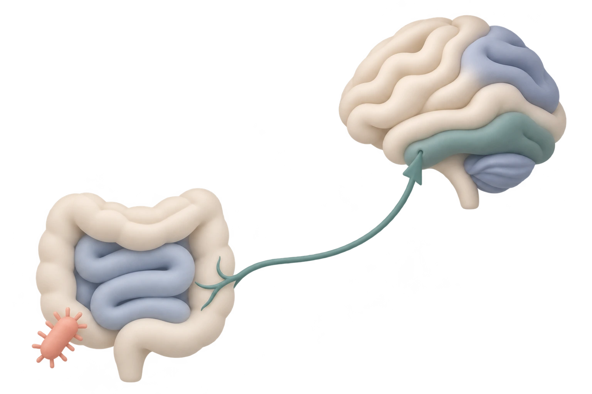
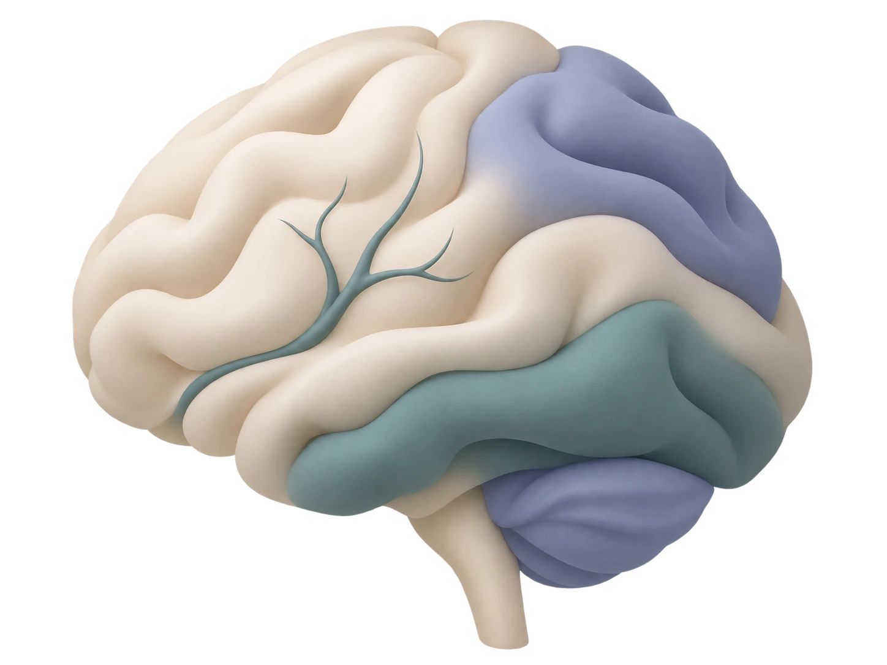
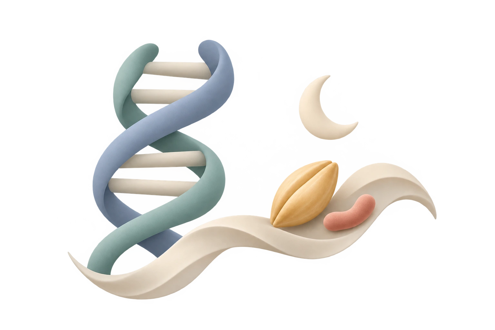
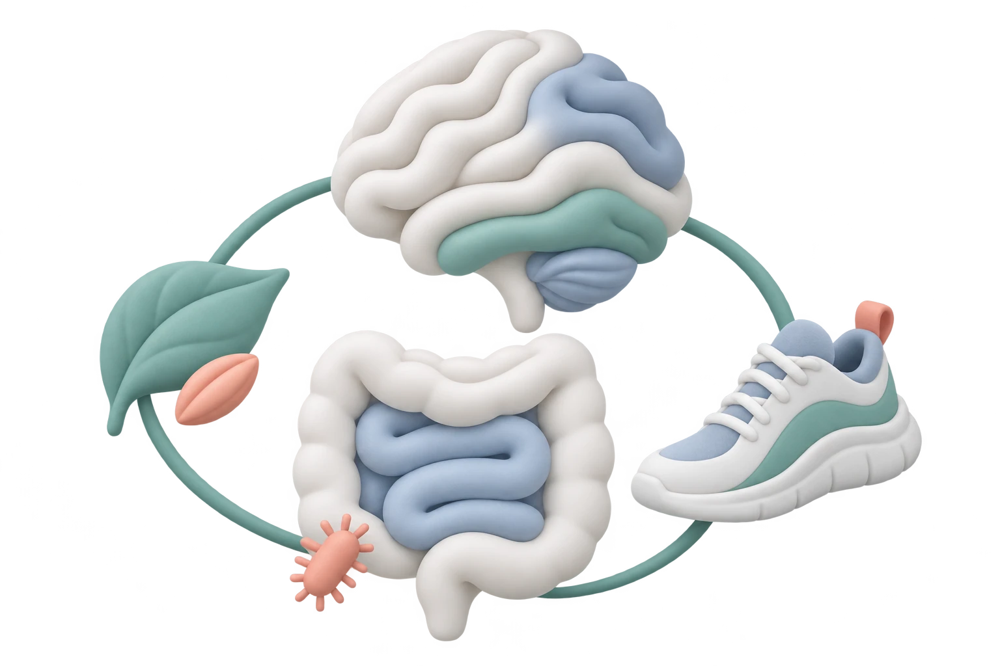

Neurodegenerative Diseases
퇴행성 신경질환
파킨슨병의 발병 아형과 숙주 유전요인, 치매의 인지기능 변화 및 중재 반응을 장내미생물의 기능과 연결해 연구합니다.
Parkinson’s disease
파킨슨병

Brain-first PD vs. Body-first PD
병적 변화가 어디에서 시작되는가
파킨슨병은 α-synuclein이라는 단백질의 비정상적인 응집과 신경세포 손상을 특징으로 하는 질환입니다. Brain-first PD는 이러한 병적 변화가 뇌에서 먼저 시작해 말초 자율신경계로 퍼지는 것으로 설명합니다. 반면 Body-first PD는 장을 포함한 말초 자율신경계에서 시작된 병적 변화가 뇌로 진행한다는 개념입니다(Horsager et al., 2020).
Body-first PD에서는 손 떨림이나 움직임이 느려지는 운동증상보다 변비, 렘수면행동장애(RBD), 자율신경 증상이 먼저 나타날 수 있습니다. 우리는 발병 경로가 다르다면 장내미생물이 관여하는 정도와 방식도 다를 것으로 예상했습니다. 이에 Brain-first와 Body-first 아형을 구분하고, 각 아형의 장내미생물 구성과 보유 기능에 어떤 차이가 있는지 연구하였습니다.

Functional Dysbiosis
구강 및 장내미생물에서 나타나는 파킨슨병의 기능 변화
장내미생물은 대사산물과 면역반응을 통해 숙주에 영향을 줍니다. 따라서 파킨슨병 환자에게 어떤 균이 많고 적은지를 확인하는 것과 함께, 그 미생물들이 보유한 대사 기능이 어떻게 달라지는지를 알아야 질환에 관여하는 원인을 찾을 수 있다고 생각했습니다. 우리는 구강과 장내미생물의 유전체를 분석해, 두 부위의 변화가 서로 연결되는지와 질환에서 달라지는 미생물 기능을 조사하였습니다.
분석 결과, 파킨슨병 환자에서는 구강미생물의 변화가 장내 잠재적 병원균의 증가와 연관되어 있었습니다. 장내미생물 유전체에서는 glutamate와 arginine 합성 관련 유전자가 줄고, 항생제 내성 관련 유전자는 증가한 기능적 dysbiosis가 나타났습니다. 이는 파킨슨병의 미생물 불균형이 균의 구성뿐 아니라 군집이 보유한 대사 기능의 변화로도 나타난다는 사실을 보여줍니다.

Body-first PD & Microbial Functions
단백질 응집과 신경세포 보호에 관련된 미생물 기능의 변화
파킨슨병에서 기능적 dysbiosis를 확인한 뒤에는, 이러한 변화가 발병 아형에 따라 어떻게 달라지는지를 연구했습니다. Brain-first PD와 Body-first PD를 구분해 비교한 결과, Body-first PD에서 장내미생물의 불균형이 더 심하게 나타났습니다. 단쇄지방산(SCFA)을 만드는 공생균이 줄고 Escherichia coli 등이 증가했으며, 질환의 병리와 연결될 수 있는 미생물 기능유전자의 변화도 확인했습니다.
특히 Body-first PD에서는 Curli protein 생합성 관련 유전자가 증가했습니다. Curli는 일부 장내세균이 만드는 아밀로이드 단백질로, α-synuclein의 응집을 유도할 수 있는 것으로 알려져 있습니다. 따라서 이 유전자들의 증가는 장내미생물의 변화가 파킨슨병의 특징적인 단백질 응집과 연결될 수 있는 기능적 단서를 제시합니다.
반대로 푸트레신(putrescine)과 스퍼미딘(spermidine)의 생합성에 관여하는 유전자는 감소했습니다. 이들은 polyamine 계열의 대사산물로, putrescine의 항산화작용과 spermidine의 자가포식 조절 등은 신경세포 보호에 관여하는 것으로 알려져 있습니다. 자가포식은 세포 안에 쌓인 단백질 등을 제거하는 과정으로, α-synuclein에 의한 신경독성과도 관련됩니다.
Body-first PD의 장내미생물에서는 단백질 응집을 촉진할 수 있는 기능의 증가와 신경세포 보호에 관련된 대사산물 합성 유전자의 감소가 함께 나타났습니다. 우리는 이 결과를 통해 Body-first PD에서 두드러지는 dysbiosis를 질환의 발병 경로와 연결하고, Curli와 polyamine 합성 기능을 미생물 기반 치료 연구의 표적으로 제시했습니다.

Host Genetics
Dysbiosis에 대한 숙주 감수성
Ongoing study
장내미생물의 불균형이 파킨슨병과 연관된다면, 비슷한 미생물 환경에 노출되어도 어떤 사람에게서 질병이 발생하는지를 설명해야 합니다. 우리는 숙주의 유전적 차이가 dysbiosis에 대한 감수성을 높이고, 질병의 발생이나 말초신경 침범 양상에 영향을 줄 수 있다고 생각했습니다.
현재는 파킨슨병 환자와 생활환경을 공유하는 배우자의 자료를 함께 분석해, 숙주 유전요인(host genetic factors)과 미생물 기능, 임상 특성의 관계를 조사하고 있습니다. 미생물의 어떤 변화와 숙주의 어떤 특성이 만났을 때 질환과의 연관성이 강해지는지를 규명하는 연구입니다.

RBD-targeted PD Therapy
운동증상 이전 단계의 파킨슨병 치료제 개발
Future plan
렘수면행동장애(RBD)는 꿈속 행동이 수면 중 실제 움직임으로 나타나는 질환으로, 일부 환자에서 파킨슨병의 운동증상보다 먼저 나타납니다. RBD 환자를 대상으로 하면 Body-first PD의 전구단계에서 장내미생물 기능에 개입할 수 있다는 점에서, 발병을 늦추기 위한 치료제 개발의 중요한 대상입니다.
앞으로 RBD 환자의 장내미생물 기능을 분석해 조절할 대사 기능을 정하고, 각 환자의 기능구성에 맞는 식이섬유와 조합을 개발할 계획입니다. 기질을 공급했을 때 실제 미생물 기능과 대사산물이 어떻게 바뀌는지를 확인한 뒤, 이러한 개입이 파킨슨병의 발병과 진행을 늦출 수 있는지 검증할 계획입니다.
Dementia
치매

SUPERBRAIN
생활습관 중재에 대한 인지기능 반응과 장내미생물
치매 위험이 있는 고령자에게 운동, 인지훈련, 영양관리 등을 함께 적용하면 인지기능 개선을 기대할 수 있지만, 같은 프로그램에 참여해도 반응은 사람마다 다릅니다. 장내미생물이 숙주의 대사와 면역반응에 관여하고 식사와 운동의 영향을 받는다는 점에서, 이러한 반응의 차이도 미생물과 연관될 것으로 예상했습니다. 이에 24주 SUPERBRAIN 복합 생활습관 중재에서 인지기능과 장내미생물의 변화를 함께 분석하였습니다.
중재군에서는 대조군보다 인지기능의 개선 폭이 컸고, 중재 후 장내미생물의 dysbiosis도 감소했습니다. 단쇄지방산을 만드는 Faecalibacterium과 Butyrivibrio 등이 늘고 Enterobacteriaceae의 일부 균군은 줄면서, 군집 구성이 건강한 기준군에 가까워지는 양상을 확인했습니다.
중재 전 미생물과 임상정보를 이용해 이후 인지기능 개선 여부를 예측하는 모델을 탐색적으로 구축했습니다. 이 모델에서는 신체기능 점수와 Eubacterium의 양이 주요 변수로 나타났습니다. 이 연구는 생활습관 중재에 따른 인지기능 변화와 미생물의 변화를 함께 제시했으며, 중재 전 마이크로바이옴을 개인별 반응을 예측하는 지표로 연구할 근거를 확보했습니다.
Oral & Gut Microbiome
미생물 기능과 인지저하, 알츠하이머병 병리의 관계
Ongoing study
생활습관 중재에 따른 미생물 변화를 확인한 뒤에는, 미생물이 치매의 진행 및 뇌 병리와 어떤 관계가 있는지를 더 구체적으로 밝힐 필요가 있다고 생각했습니다. 같은 인지저하가 나타나더라도 뇌영상과 알츠하이머병 병리지표는 사람마다 다르기 때문에, 미생물의 변화를 실제 뇌의 변화와 연결해 분석하는 연구가 필요합니다.
현재는 치매 코호트를 대상으로 구강 및 장내미생물 유전체, 인지기능, 뇌영상, 알츠하이머병 병리지표를 통합 분석하는 연구를 수행 중입니다. 구강과 장에서 나타나는 미생물의 변화가 서로 연결되는지, 어떤 미생물 기능과 유전자가 인지저하 및 병리 변화와 연관되는지를 조사하고 있습니다.
인지기능과 연관된 미생물 지표 가운데 실제 뇌 병리 및 숙주 반응과 연결되는 기능을 찾고, 이를 후속 기전 연구의 표적으로 선별하고 있습니다. 어떤 미생물 기능을 변화시켜야 인지저하와 병리 진행에 개입할 수 있는지를 규명하는 것이 연구의 목표입니다.